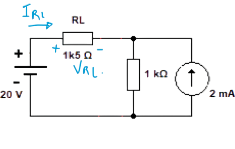
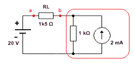
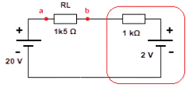
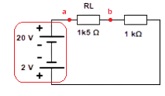

Quando um circuito contém várias fontes (de tensão e corrente), podemos simplificá-lo substituindo uma ou mais fontes por suas equivalentes. Esse processo é chamado de Método da Substituição de Fontes Reais Equivalentes.
O objetivo é tornar o circuito mais simples de analisar, sem alterar o comportamento elétrico sobre a carga.
1) Identifique as grandezas a determinar (tensão e/ou corrente).
2) Localize o resistor onde essas grandezas serão calculadas. Esse resistor não pode ser usado como resistência interna (ri) de nenhuma fonte.
3) Verifique qual fonte pode ser trocada pela sua equivalente e realize a substituição.
4) Simplifique o circuito passo a passo até poder calcular a corrente e a tensão desejadas.
Inicialmente temos uma fonte real de corrente (2 mA) com sua resistência interna (1 kΩ) em paralelo, e uma carga de 1,5 kΩ conectada ao circuito.
Sabemos que uma fonte real de corrente pode ser substituída pela sua fonte real de tensão equivalente. Aplicando a relação V = I × ri, temos: V = 2 mA × 1 kΩ = 2 V.
Essa tensão de 2 V representa a nova fonte equivalente, que substituirá a fonte de corrente e sua resistência interna em paralelo.
Após a substituição, a nova fonte de 2 V fica em série com o resistor de 1 kΩ (que antes era o ri da fonte de corrente). Agora temos apenas fontes de tensão no circuito.
Em seguida, somamos algebricamente as tensões, respeitando seus sinais (polaridades): +20 V e -2 V → Veq = 18 V.
Com a nova tensão equivalente (18 V), o circuito agora contém apenas resistores em série, tornando possível o cálculo direto da corrente e da tensão sobre a carga.

IRL = 18 / (1500 + 1000) = 7,2 mA
VRL = IRL × 1500 = 10,8 V
Assim, a substituição da fonte real de corrente por sua equivalente de tensão simplifica o circuito sem alterar o comportamento elétrico sobre a carga.
O método da substituição é uma ferramenta poderosa para simplificar circuitos com múltiplas fontes. Ele mantém o comportamento elétrico original do circuito e facilita a aplicação das Leis de Kirchhoff.
O uso correto da resistência interna (ri) é fundamental para que as substituições sejam válidas e mantenham o mesmo efeito sobre a carga.